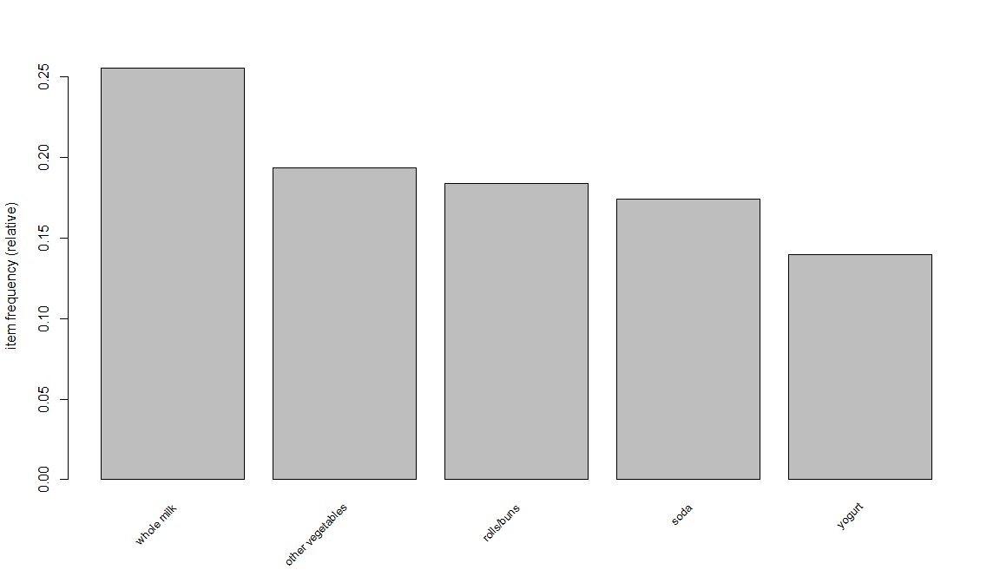
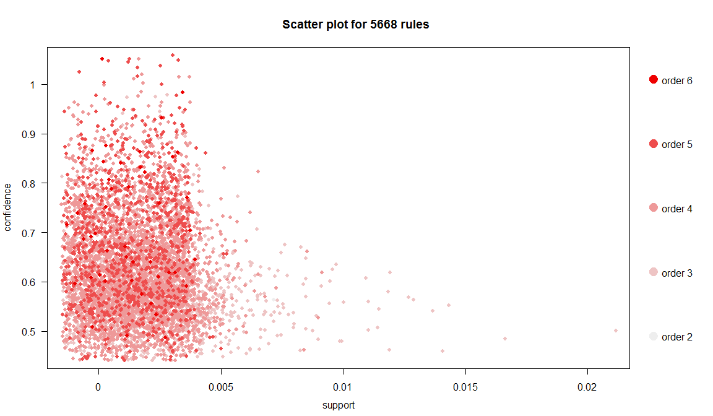

Association analysis and sequence mining
Jose Parreno Garcia
February 2018
- 1 Transforming data into transactions
- 2 Displaying transactions and associations
- 3 Mining associations with the apriori rule
- 4 Pruning redundant rules
- 5 Visualizing association rules
- 6 Mining frequent itemsets with Eclat
- 7 Creating transactions with temporal information
- 8 Mining frequent sequential patterns with cSPADE
library(knitr)We will look at:
- Transforming data into transactions
- Displaying transactions and associations
- Mining associations with the apriori rule
- Pruning redundant rules
- Visualizing association rules
- Mining frequent itemsets with Eclat
- Creating transactions with temporal information
- Mining frequent sequential patterns with cSPADE
1 Transforming data into transactions
1.1 Transforming list into transactions
library(arules)
# IMAGINE WE HAVE 3 DATASETS OF 3 DIFFERENT PURCHASE RECORDS
tr_list = list(c("Apple", "Bread", "Cake"),
c("Apple", "Bread", "Milk"),
c("Bread", "Cake", "Milk"))
names(tr_list) = paste("Tr",c(1:3), sep = "")
tr_list## $Tr1
## [1] "Apple" "Bread" "Cake"
##
## $Tr2
## [1] "Apple" "Bread" "Milk"
##
## $Tr3
## [1] "Bread" "Cake" "Milk"trans = as(tr_list, "transactions")
trans## transactions in sparse format with
## 3 transactions (rows) and
## 4 items (columns)1.2 Transforming matrix into transactions
tr_matrix = matrix(
c(1,1,1,0,
1,1,0,1,
0,1,1,1), ncol = 4)
dimnames(tr_matrix) = list(
paste("Tr",c(1:3), sep = ""),c("Apple","Bread","Cake", "Milk"))
trans2 = as(tr_matrix, "transactions")
trans2## transactions in sparse format with
## 3 transactions (rows) and
## 4 items (columns)1.3 Transforming dataframe into transactions
Tr_df = data.frame(
TrID= as.factor(c(1,2,1,1,2,3,2,3,2,3)),
Item = as.factor(c("Apple","Milk","Cake","Bread",
"Cake","Milk","Apple","Cake",
"Bread","Bread"))
)
trans3 = as(split(Tr_df[,"Item"], Tr_df[,"TrID"]),"transactions")
trans3## transactions in sparse format with
## 3 transactions (rows) and
## 4 items (columns)2 Displaying transactions and associations
LIST(trans)## $Tr1
## [1] "Apple" "Bread" "Cake"
##
## $Tr2
## [1] "Apple" "Bread" "Milk"
##
## $Tr3
## [1] "Bread" "Cake" "Milk"summary(trans)## transactions as itemMatrix in sparse format with
## 3 rows (elements/itemsets/transactions) and
## 4 columns (items) and a density of 0.75
##
## most frequent items:
## Bread Apple Cake Milk (Other)
## 3 2 2 2 0
##
## element (itemset/transaction) length distribution:
## sizes
## 3
## 3
##
## Min. 1st Qu. Median Mean 3rd Qu. Max.
## 3 3 3 3 3 3
##
## includes extended item information - examples:
## labels
## 1 Apple
## 2 Bread
## 3 Cake
##
## includes extended transaction information - examples:
## transactionID
## 1 Tr1
## 2 Tr2
## 3 Tr3inspect(trans)## items transactionID
## [1] {Apple,Bread,Cake} Tr1
## [2] {Apple,Bread,Milk} Tr2
## [3] {Bread,Cake,Milk} Tr3filter_trains = trans[size(trans) >=3]
inspect(filter_trains)## items transactionID
## [1] {Apple,Bread,Cake} Tr1
## [2] {Apple,Bread,Milk} Tr2
## [3] {Bread,Cake,Milk} Tr3image(trans)itemFrequencyPlot (trans)3 Mining associations with the apriori rule
data(Groceries)
summary(Groceries)## transactions as itemMatrix in sparse format with
## 9835 rows (elements/itemsets/transactions) and
## 169 columns (items) and a density of 0.02609146
##
## most frequent items:
## whole milk other vegetables rolls/buns soda yogurt (Other)
## 2513 1903 1809 1715 1372 34055
##
## element (itemset/transaction) length distribution:
## sizes
## 1 2 3 4 5 6 7 8 9 10 11 12 13 14 15 16 17 18 19 20 21 22 23 24 26 27 28 29 32
## 2159 1643 1299 1005 855 645 545 438 350 246 182 117 78 77 55 46 29 14 14 9 11 4 6 1 1 1 1 3 1
##
## Min. 1st Qu. Median Mean 3rd Qu. Max.
## 1.000 2.000 3.000 4.409 6.000 32.000
##
## includes extended item information - examples:
## labels level2 level1
## 1 frankfurter sausage meat and sausage
## 2 sausage sausage meat and sausage
## 3 liver loaf sausage meat and sausageitemFrequencyPlot(Groceries, support = 0.1, cex.names=0.8,topN=5)
rules = apriori(Groceries, parameter = list(supp = 0.001, conf = 0.5, target= "rules"))## Apriori
##
## Parameter specification:
## confidence minval smax arem aval originalSupport maxtime support minlen maxlen target ext
## 0.5 0.1 1 none FALSE TRUE 5 0.001 1 10 rules FALSE
##
## Algorithmic control:
## filter tree heap memopt load sort verbose
## 0.1 TRUE TRUE FALSE TRUE 2 TRUE
##
## Absolute minimum support count: 9
##
## set item appearances ...[0 item(s)] done [0.00s].
## set transactions ...[169 item(s), 9835 transaction(s)] done [0.08s].
## sorting and recoding items ... [157 item(s)] done [0.00s].
## creating transaction tree ... done [0.11s].
## checking subsets of size 1 2 3 4 5 6 done [0.38s].
## writing ... [5668 rule(s)] done [0.07s].
## creating S4 object ... done [0.00s].summary(rules)## set of 5668 rules
##
## rule length distribution (lhs + rhs):sizes
## 2 3 4 5 6
## 11 1461 3211 939 46
##
## Min. 1st Qu. Median Mean 3rd Qu. Max.
## 2.00 3.00 4.00 3.92 4.00 6.00
##
## summary of quality measures:
## support confidence lift count
## Min. :0.001017 Min. :0.5000 Min. : 1.957 Min. : 10.0
## 1st Qu.:0.001118 1st Qu.:0.5455 1st Qu.: 2.464 1st Qu.: 11.0
## Median :0.001322 Median :0.6000 Median : 2.899 Median : 13.0
## Mean :0.001668 Mean :0.6250 Mean : 3.262 Mean : 16.4
## 3rd Qu.:0.001729 3rd Qu.:0.6842 3rd Qu.: 3.691 3rd Qu.: 17.0
## Max. :0.022267 Max. :1.0000 Max. :18.996 Max. :219.0
##
## mining info:
## data ntransactions support confidence
## Groceries 9835 0.001 0.5inspect(head(rules))## lhs rhs support confidence lift count
## [1] {honey} => {whole milk} 0.001118454 0.7333333 2.870009 11
## [2] {tidbits} => {rolls/buns} 0.001220132 0.5217391 2.836542 12
## [3] {cocoa drinks} => {whole milk} 0.001321810 0.5909091 2.312611 13
## [4] {pudding powder} => {whole milk} 0.001321810 0.5652174 2.212062 13
## [5] {cooking chocolate} => {whole milk} 0.001321810 0.5200000 2.035097 13
## [6] {cereals} => {whole milk} 0.003660397 0.6428571 2.515917 36rules=sort(rules, by="confidence", decreasing=TRUE)
inspect(head(rules))## lhs rhs support confidence lift count
## [1] {rice,sugar} => {whole milk} 0.001220132 1 3.913649 12
## [2] {canned fish,hygiene articles} => {whole milk} 0.001118454 1 3.913649 11
## [3] {root vegetables,butter,rice} => {whole milk} 0.001016777 1 3.913649 10
## [4] {root vegetables,whipped/sour cream,flour} => {whole milk} 0.001728521 1 3.913649 17
## [5] {butter,soft cheese,domestic eggs} => {whole milk} 0.001016777 1 3.913649 10
## [6] {citrus fruit,root vegetables,soft cheese} => {other vegetables} 0.001016777 1 5.168156 10head(interestMeasure(rules, c("support", "chiSquare", "confidence",
"conviction","cosine", "coverage",
"leverage", "lift","oddsRatio"),Groceries))## support chiSquared confidence conviction cosine coverage leverage lift oddsRatio
## 1 0.001220132 35.00650 1 NA 0.06910260 0.001220132 0.0009083689 3.913649 NA
## 2 0.001118454 32.08603 1 NA 0.06616070 0.001118454 0.0008326715 3.913649 NA
## 3 0.001016777 29.16615 1 NA 0.06308175 0.001016777 0.0007569741 3.913649 NA
## 4 0.001728521 49.61780 1 NA 0.08224854 0.001728521 0.0012868559 3.913649 NA
## 5 0.001016777 29.16615 1 NA 0.06308175 0.001016777 0.0007569741 3.913649 NA
## 6 0.001016777 41.72398 1 NA 0.07249042 0.001016777 0.0008200380 5.168156 NA4 Pruning redundant rules
rules.sorted = sort(rules, by="lift")
subset.matrix = is.subset(rules.sorted, rules.sorted)
subset.matrix[lower.tri(subset.matrix, diag=T)] = NA## Warning in `[<-`(`*tmp*`, as.vector(i), value = NA): x[.] <- val: x is "ngTMatrix", val not in {TRUE, FALSE} is coerced; NA |--> TRUE.redundant = colSums(subset.matrix, na.rm=T) >= 1
head(redundant)## {hamburger meat,Instant food products,soda} {soda,salty snack,popcorn} {flour,sugar,baking powder}
## TRUE TRUE TRUE
## {ham,processed cheese,white bread} {hamburger meat,whole milk,Instant food products} {other vegetables,curd,yogurt,whipped/sour cream,cream cheese }
## TRUE TRUE TRUE5 Visualizing association rules
# install.packages("arulesViz")
library(arulesViz)
rules.pruned = rules.sorted
plot(rules.pruned)# this plot is to prevent points falling on top of each other
plot(rules.pruned, shading="order", control=list(jitter=6))
# plotting only the soda rula
soda_rule = apriori(data=Groceries, parameter=list(supp=0.001,
conf= 0.1), appearance = list(default="rhs",lhs="soda"))## Apriori
##
## Parameter specification:
## confidence minval smax arem aval originalSupport maxtime support minlen maxlen target ext
## 0.1 0.1 1 none FALSE TRUE 5 0.001 1 10 rules FALSE
##
## Algorithmic control:
## filter tree heap memopt load sort verbose
## 0.1 TRUE TRUE FALSE TRUE 2 TRUE
##
## Absolute minimum support count: 9
##
## set item appearances ...[1 item(s)] done [0.00s].
## set transactions ...[169 item(s), 9835 transaction(s)] done [0.00s].
## sorting and recoding items ... [157 item(s)] done [0.00s].
## creating transaction tree ... done [0.01s].
## checking subsets of size 1 2 done [0.00s].
## writing ... [18 rule(s)] done [0.00s].
## creating S4 object ... done [0.00s].# plot the rule
plot(sort(soda_rule, by="lift"), method="graph",control=list(type="items"))## Warning: Unknown control parameters: type## Available control parameters (with default values):
## main = Graph for 18 rules
## nodeColors = c("#66CC6680", "#9999CC80")
## nodeCol = c("#EE0000FF", "#EE0303FF", "#EE0606FF", "#EE0909FF", "#EE0C0CFF", "#EE0F0FFF", "#EE1212FF", "#EE1515FF", "#EE1818FF", "#EE1B1BFF", "#EE1E1EFF", "#EE2222FF", "#EE2525FF", "#EE2828FF", "#EE2B2BFF", "#EE2E2EFF", "#EE3131FF", "#EE3434FF", "#EE3737FF", "#EE3A3AFF", "#EE3D3DFF", "#EE4040FF", "#EE4444FF", "#EE4747FF", "#EE4A4AFF", "#EE4D4DFF", "#EE5050FF", "#EE5353FF", "#EE5656FF", "#EE5959FF", "#EE5C5CFF", "#EE5F5FFF", "#EE6262FF", "#EE6666FF", "#EE6969FF", "#EE6C6CFF", "#EE6F6FFF", "#EE7272FF", "#EE7575FF", "#EE7878FF", "#EE7B7BFF", "#EE7E7EFF", "#EE8181FF", "#EE8484FF", "#EE8888FF", "#EE8B8BFF", "#EE8E8EFF", "#EE9191FF", "#EE9494FF", "#EE9797FF", "#EE9999FF", "#EE9B9BFF", "#EE9D9DFF", "#EE9F9FFF", "#EEA0A0FF", "#EEA2A2FF", "#EEA4A4FF", "#EEA5A5FF", "#EEA7A7FF", "#EEA9A9FF", "#EEABABFF", "#EEACACFF", "#EEAEAEFF", "#EEB0B0FF", "#EEB1B1FF", "#EEB3B3FF", "#EEB5B5FF", "#EEB7B7FF", "#EEB8B8FF", "#EEBABAFF", "#EEBCBCFF", "#EEBDBDFF", "#EEBFBFFF", "#EEC1C1FF", "#EEC3C3FF", "#EEC4C4FF", "#EEC6C6FF", "#EEC8C8FF", "#EEC9C9FF", "#EECBCBFF", "#EECDCDFF", "#EECFCFFF", "#EED0D0FF", "#EED2D2FF", "#EED4D4FF", "#EED5D5FF", "#EED7D7FF", "#EED9D9FF", "#EEDBDBFF", "#EEDCDCFF", "#EEDEDEFF", "#EEE0E0FF", "#EEE1E1FF", "#EEE3E3FF", "#EEE5E5FF", "#EEE7E7FF", "#EEE8E8FF", "#EEEAEAFF", "#EEECECFF", "#EEEEEEFF")
## edgeCol = c("#474747FF", "#494949FF", "#4B4B4BFF", "#4D4D4DFF", "#4F4F4FFF", "#515151FF", "#535353FF", "#555555FF", "#575757FF", "#595959FF", "#5B5B5BFF", "#5E5E5EFF", "#606060FF", "#626262FF", "#646464FF", "#666666FF", "#686868FF", "#6A6A6AFF", "#6C6C6CFF", "#6E6E6EFF", "#707070FF", "#727272FF", "#747474FF", "#767676FF", "#787878FF", "#7A7A7AFF", "#7C7C7CFF", "#7E7E7EFF", "#808080FF", "#828282FF", "#848484FF", "#868686FF", "#888888FF", "#8A8A8AFF", "#8C8C8CFF", "#8D8D8DFF", "#8F8F8FFF", "#919191FF", "#939393FF", "#959595FF", "#979797FF", "#999999FF", "#9A9A9AFF", "#9C9C9CFF", "#9E9E9EFF", "#A0A0A0FF", "#A2A2A2FF", "#A3A3A3FF", "#A5A5A5FF", "#A7A7A7FF", "#A9A9A9FF", "#AAAAAAFF", "#ACACACFF", "#AEAEAEFF", "#AFAFAFFF", "#B1B1B1FF", "#B3B3B3FF", "#B4B4B4FF", "#B6B6B6FF", "#B7B7B7FF", "#B9B9B9FF", "#BBBBBBFF", "#BCBCBCFF", "#BEBEBEFF", "#BFBFBFFF", "#C1C1C1FF", "#C2C2C2FF", "#C3C3C4FF", "#C5C5C5FF", "#C6C6C6FF", "#C8C8C8FF", "#C9C9C9FF", "#CACACAFF", "#CCCCCCFF", "#CDCDCDFF", "#CECECEFF", "#CFCFCFFF", "#D1D1D1FF", "#D2D2D2FF", "#D3D3D3FF", "#D4D4D4FF", "#D5D5D5FF", "#D6D6D6FF", "#D7D7D7FF", "#D8D8D8FF", "#D9D9D9FF", "#DADADAFF", "#DBDBDBFF", "#DCDCDCFF", "#DDDDDDFF", "#DEDEDEFF", "#DEDEDEFF", "#DFDFDFFF", "#E0E0E0FF", "#E0E0E0FF", "#E1E1E1FF", "#E1E1E1FF", "#E2E2E2FF", "#E2E2E2FF", "#E2E2E2FF")
## alpha = 0.5
## cex = 1
## itemLabels = TRUE
## labelCol = #000000B3
## measureLabels = FALSE
## precision = 3
## layout = NULL
## layoutParams = list()
## arrowSize = 0.5
## engine = igraph
## plot = TRUE
## plot_options = list()
## max = 100
## verbose = FALSE
# the same but grouped and ordered
plot(soda_rule, method="grouped")6 Mining frequent itemsets with Eclat

frequentsets=eclat(Groceries,parameter=list(support=0.05,maxlen=10))## Eclat
##
## parameter specification:
## tidLists support minlen maxlen target ext
## FALSE 0.05 1 10 frequent itemsets FALSE
##
## algorithmic control:
## sparse sort verbose
## 7 -2 TRUE
##
## Absolute minimum support count: 491
##
## create itemset ...
## set transactions ...[169 item(s), 9835 transaction(s)] done [0.01s].
## sorting and recoding items ... [28 item(s)] done [0.00s].
## creating sparse bit matrix ... [28 row(s), 9835 column(s)] done [0.05s].
## writing ... [31 set(s)] done [0.00s].
## Creating S4 object ... done [0.00s].summary(frequentsets)## set of 31 itemsets
##
## most frequent items:
## whole milk other vegetables yogurt rolls/buns frankfurter (Other)
## 4 2 2 2 1 23
##
## element (itemset/transaction) length distribution:sizes
## 1 2
## 28 3
##
## Min. 1st Qu. Median Mean 3rd Qu. Max.
## 1.000 1.000 1.000 1.097 1.000 2.000
##
## summary of quality measures:
## support count
## Min. :0.05236 Min. : 515.0
## 1st Qu.:0.05831 1st Qu.: 573.5
## Median :0.07565 Median : 744.0
## Mean :0.09212 Mean : 906.0
## 3rd Qu.:0.10173 3rd Qu.:1000.5
## Max. :0.25552 Max. :2513.0
##
## includes transaction ID lists: FALSE
##
## mining info:
## data ntransactions support
## Groceries 9835 0.05inspect(sort(frequentsets,by="support")[1:10])## items support count
## [1] {whole milk} 0.25551601 2513
## [2] {other vegetables} 0.19349263 1903
## [3] {rolls/buns} 0.18393493 1809
## [4] {soda} 0.17437722 1715
## [5] {yogurt} 0.13950178 1372
## [6] {bottled water} 0.11052364 1087
## [7] {root vegetables} 0.10899847 1072
## [8] {tropical fruit} 0.10493137 1032
## [9] {shopping bags} 0.09852567 969
## [10] {sausage} 0.09395018 9247 Creating transactions with temporal information
# install.packages("arulesSequences")
library(arulesSequences)
tmp_data=list(c("A"),
c("A","B","C"),
c("A","C"),
c("D"),
c("C","F"),
c("A","D"),
c("C"),
c("B","C"),
c("A","E"),
c("E","F"),
c("A","B"),
c("D","F"),
c("C"),
c("B"),
c("E"),
c("G"),
c("A","F"),
c("C"),
c("B"),
c("C"))
names(tmp_data) = paste("Tr",c(1:20), sep = "")
trans = as(tmp_data,"transactions")
transactionInfo(trans)$sequenceID = c(1,1,1,1,1,2,2,2,2,3,3,3,3,3,4,4,4,4,4,4)
transactionInfo(trans)$eventID=c(10,20,30,40,50,10,20,30,40,10,20
,30,40,50,10,20,30,40,50,60)
trans## transactions in sparse format with
## 20 transactions (rows) and
## 7 items (columns)inspect(head(trans))## items transactionID sequenceID eventID
## [1] {A} Tr1 1 10
## [2] {A,B,C} Tr2 1 20
## [3] {A,C} Tr3 1 30
## [4] {D} Tr4 1 40
## [5] {C,F} Tr5 1 50
## [6] {A,D} Tr6 2 10summary(trans)## transactions as itemMatrix in sparse format with
## 20 rows (elements/itemsets/transactions) and
## 7 columns (items) and a density of 0.2214286
##
## most frequent items:
## C A B F D (Other)
## 8 7 5 4 3 4
##
## element (itemset/transaction) length distribution:
## sizes
## 1 2 3
## 10 9 1
##
## Min. 1st Qu. Median Mean 3rd Qu. Max.
## 1.00 1.00 1.50 1.55 2.00 3.00
##
## includes extended item information - examples:
## labels
## 1 A
## 2 B
## 3 C
##
## includes extended transaction information - examples:
## transactionID sequenceID eventID
## 1 Tr1 1 10
## 2 Tr2 1 20
## 3 Tr3 1 30zaki=read_baskets(con = system.file("misc", "zaki.txt",
package= "arulesSequences"), info = c("sequenceID","eventID","SIZE"))
as(zaki, "data.frame")## items sequenceID eventID SIZE
## 1 {C,D} 1 10 2
## 2 {A,B,C} 1 15 3
## 3 {A,B,F} 1 20 3
## 4 {A,C,D,F} 1 25 4
## 5 {A,B,F} 2 15 3
## 6 {E} 2 20 1
## 7 {A,B,F} 3 10 3
## 8 {D,G,H} 4 10 3
## 9 {B,F} 4 20 2
## 10 {A,G,H} 4 25 38 Mining frequent sequential patterns with cSPADE
s_result=cspade(trans,parameter = list(support = 0.75),
control = list(verbose = TRUE))##
## parameter specification:
## support : 0.75
## maxsize : 10
## maxlen : 10
##
## algorithmic control:
## bfstype : FALSE
## verbose : TRUE
## summary : FALSE
## tidLists : FALSE
##
## preprocessing ... 1 partition(s), 0 MB [1.2s]
## mining transactions ... 0 MB [0.23s]
## reading sequences ... [0.1s]
##
## total elapsed time: 1.53ssummary(s_result)## set of 14 sequences with
##
## most frequent items:
## C A B D E (Other)
## 8 5 5 2 1 1
##
## most frequent elements:
## {C} {A} {B} {D} {E} (Other)
## 8 5 5 2 1 1
##
## element (sequence) size distribution:
## sizes
## 1 2 3
## 6 6 2
##
## sequence length distribution:
## lengths
## 1 2 3
## 6 6 2
##
## summary of quality measures:
## support
## Min. :0.7500
## 1st Qu.:0.7500
## Median :0.7500
## Mean :0.8393
## 3rd Qu.:1.0000
## Max. :1.0000
##
## includes transaction ID lists: FALSE
##
## mining info:
## data ntransactions nsequences support
## trans 20 4 0.75as(s_result, "data.frame")## sequence support
## 1 <{A}> 1.00
## 2 <{B}> 1.00
## 3 <{C}> 1.00
## 4 <{D}> 0.75
## 5 <{E}> 0.75
## 6 <{F}> 0.75
## 7 <{A},{C}> 1.00
## 8 <{B},{C}> 0.75
## 9 <{C},{C}> 0.75
## 10 <{D},{C}> 0.75
## 11 <{A},{C},{C}> 0.75
## 12 <{A},{B}> 1.00
## 13 <{C},{B}> 0.75
## 14 <{A},{C},{B}> 0.75